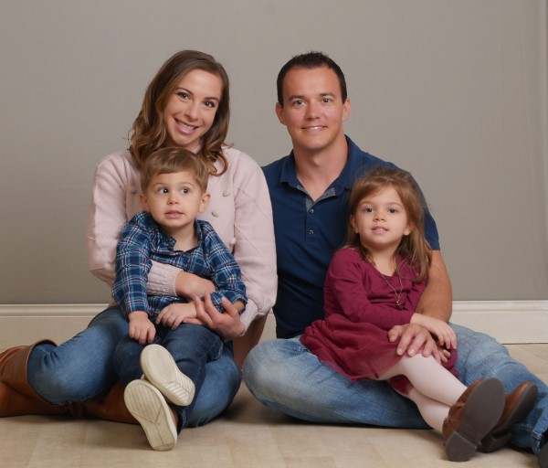

About the site
Thanks for visiting my site! My primary objective in creating this site has been to create my own little space on the internet and provide a playground of sorts for projects.
Everything you see here was coded by me in HTML, CSS (SASS), and vanilla javascript (yes, even this awesome canvas background and the splash screen).
Feel free to shoot me an email or hit me up on LinkedIn!
About me
I grew up in a small community in western Kansas, and upon graduation from high school, followed in the footsteps of my father and brother to attend and graduate from Kansas State University (go cats!).
At K-State, I met my now wife, Tiffany, and we married and moved to Texas in 2012. Since living in Texas, we've added two members to our little familiy: daughter Cora and son Warren.
In addition to continuing education and professional objectives, I have a lot of interests that are hard to keep up with: avid cooker, beer brewer, and sailor (to name a few).
With cooking, I have taken upon myself to cook from home regularly. The full meal usually involves some combination of meat, starch, beans, and/or vegetable. In addition to the health benefits and cost savings, it gives me a creative outlet. I have two avid "helpers" in the kitchen....
As for brewing, I explore with various styles and generally have two different beers on tap at any given time. At the time of writing, I have a Lemon Infused Session IPA and a West Coast inspired Pale Ale on tap. If you're tracking along, you may notice a trend with in my hobbies thus far: creativity and calories. Unlike cooking which makes the house smell awesome, brewing beer is stinky business. If we ever buy a house again, I may get relocated to the garage.
On the sailing front, my father and I share a Hobie 18 which we take into the Gulf of Mexico whenever time allows. Tiffany and I took classes while in Corpus and are both ASA 101, 103, and 104 certified. We looked more seriously at getting a bigger boat while living in Corpus Christi, but Houston and young kids have dampened my enthusiasm for adding boat maintenance to my schedule... for now anyways.